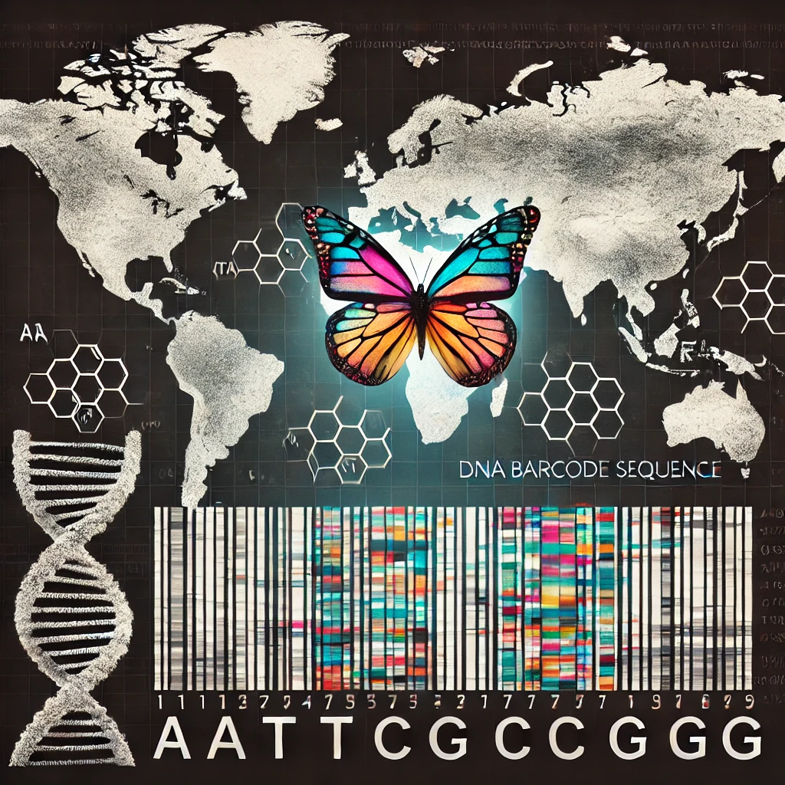

Projects

BIOSCAN-1M
Introducing, studying, and benchmarking the BIOSCAN-1M Insect dataset.

BIOSCAN-5M
Introducing, studying, and benchmarking the BIOSCAN-5M multimodal dataset.
SuperFormer
A Transformer-based model that leverages superpixels for efficient Salient Object Detection (SOD).

SLOPE-KP
An approach to self-supervised learning of object pose estimation by keypoints prediction.

MoE-VRD
An approach to video relationship detection using mixture of experts.

GAIN
An approach to graph representation learning.

Causality
Two approaches to generative and implicit causal representation learning.
Autonomous Driving
An approach to Bayesian Reinforcement Learning of vision-based vehicular control.